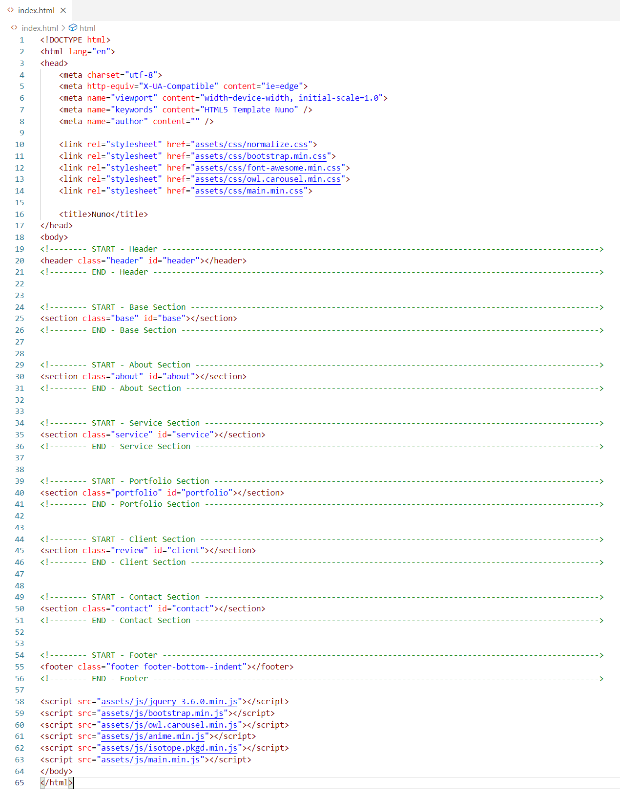
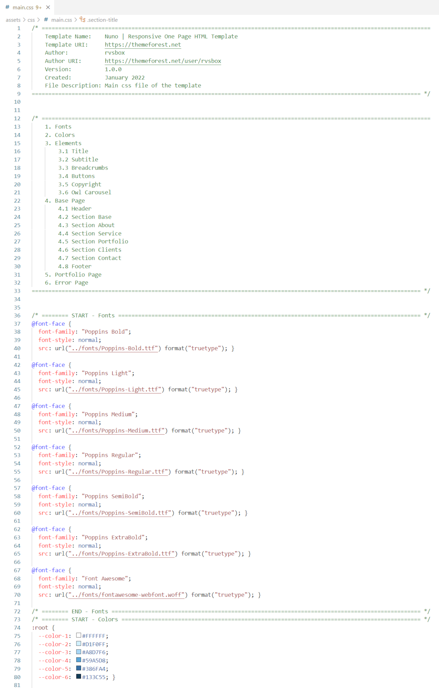

Introduction
Thank you so much for choosing our theme. We sincerely appreciate and really hope that you will like our theme!
Nuno is a simple, minimal portfolio theme, suitable for many who want to create their own website.
This document describes the location of the template files, the structure of the code in files with the extension html, css, js, the libraries used, and also provides useful links to libraries and services. We recommend that you read this document before contacting our support service.
For the convenience of working with the template, we have added comments to all file types.
File Structure
The project files are arranged in a classic way. The main files are main.css and main.js.

Libraries
List of used libraries and their location.
- Anime v3.2.1
- Bootstrap v4.6.0
- Font Awesome v4.7.0
- Isotope v3.0.6
- Normalize.css v.8.0.1
- Owl Carousel v2.3.4
- jQuery v3.6.0
HTML File Structure
For a comfortable orientation in the structure of HTML files, we have added comments.
The screenshot shows all the necessary libraries for the correct display of the template in the browser.
index.html >
CSS File Structure
Comments in the main.css file will help determine which section or element on the web page styles belong to.
main.css >
Class Hierarchy
- 1. Fonts
- 2. Colors
- 3. Elements
- 3.1 Title
- 3.2 Subtitle
- 3.3 Breadcrumbs
- 3.4 Buttons
- 3.5 Copyright
- 3.6 Owl Carousel
- 4. Base Page (index.html)
- 4.1 Header
- 4.2 Section Base
- 4.3 Section About
- 4.4 Section Service
- 4.5 Section Portfolio
- 4.6 Section Clients
- 4.7 Section Contact
- 4.8 Footer
- 5. Portfolio Page (portfolio.html, portfolio-single.html)
- 6. Error Page (error.html)